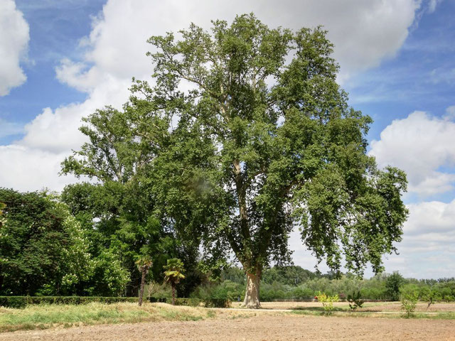

Al norte de los Jardines de La Isla. En la calle de la Reina Regente, a la entrada del camino que da acceso a la zona de los servicios de los jardineros.
Otro plátano realmente impresionante, aparte de por su altura (48 metros), por el diámetro de su arboladura, es el plátano llorón de la huerta del infante, en el jardín de la Isla. Es absolutamente bestial.